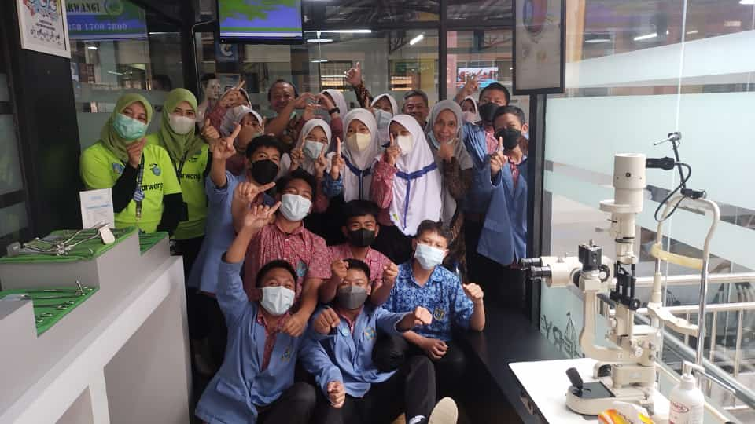
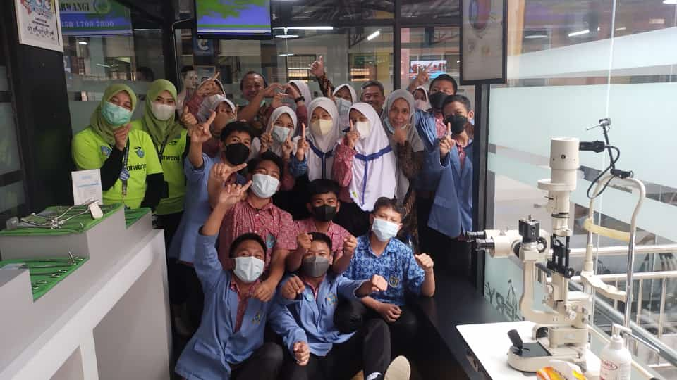
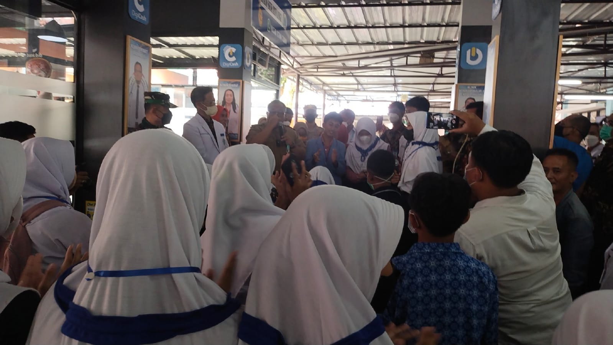
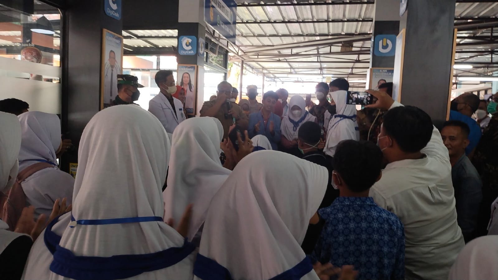

IPS Club

IPS Club adalah suatu ekskul dibidang Ilmu Pengetahuan Sosial, ekskul ini adalah salah satu program dari sekolah SMPN 1 Cibadak (Stundak) di Sukabumi Jawa Barat, yang bertujuan untuk menambah wawasan serta pengetahuan dibidang Ilmu Pengetahuan Sosial
IPS Club di Stundak bertujuan untuk memberikan materi tentang Ilmu Pengetahuan Sosial untuk kelas 7, 8, maupun 9. Materi akan dibahas bergiliran disekolah, anggota juga bisa bertanya yang dimana kita akan menjawab nya bersama sama.


 

 
